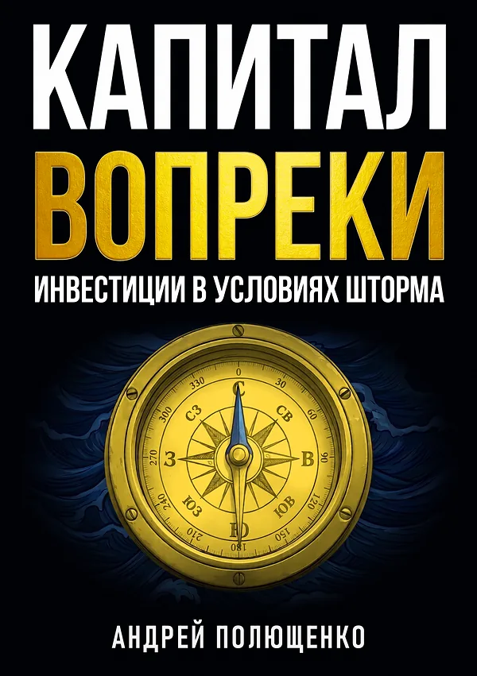
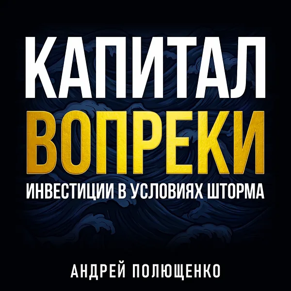

Электронная книга
Читайте в своём темпе
Полная версия книги. Читайте онлайн или в приложении ЛитРес, а для электронной книги скачивайте файл: epub, fb2, pdf и другие.
Читать на ЛитРесУзнайте, почему главный враг вашего капитала сидит не на бирже, а в вашей собственной голове.


Вы зарабатываете больше, чем пять лет назад, но капитал стоит на месте.
Так выглядит иллюзия роста
Схема-иллюстрация, а не данные конкретного человека или рынка.
Вы зарабатываете больше, чем пять лет назад, но капитал стоит на месте. Куда исчезает разница между вашим доходом и реальным богатством?
В вашей голове идет непрерывная война за право распоряжаться счетами. Почему интеллект чаще всего проигрывает биологии?
Инфраструктура важнее рыночных прогнозов. Непонимание архитектуры налогов заставляет вас отдавать капитал системе даже при растущем рынке.
Практическое руководство для тех, кто хочет начать инвестировать, но не знает как. Без мотивационных речей и обещаний — только механика, проверяемая на калькуляторе.
Жесткий расчет того, почему классические безопасные инструменты гарантируют обесценивание капитала на длинном горизонте.
Разбор того, что происходит в мозге в момент кризиса. Как сохранить рассудок и активы, когда все остальные совершают ошибки.
Математически выверенная симуляция разных налоговых режимов. Как законно сохранить ту часть прибыли, которую забирает государство.
Высокая дивидендная доходность — не всегда признак надежности. Разбор иллюзий и математика безопасного изъятия капитала.
Электронная книга
Полная версия книги. Читайте онлайн или в приложении ЛитРес, а для электронной книги скачивайте файл: epub, fb2, pdf и другие.
Читать на ЛитРесАудиокнига
Книга в наушниках: в дороге, за рулём или на прогулке — когда читать неудобно.
Скоро на ЛитРес Слушать на ЛитРесВаш мозг не создан для богатства. Но вы можете его перехитрить.
Эта книга — не обещание быстрого богатства. Это набор прагматичных инструментов для работы с вашим капиталом. Для тех, кому нужна инструкция, а не мечта.